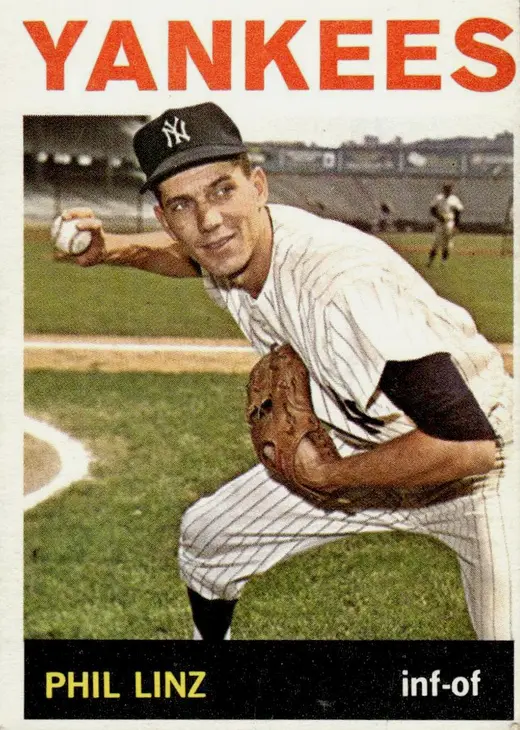

Phil Linz
Career Highlights & Facts
(Facts are AI-generated and may require verification)
- Won a World Series championship as a rookie in 1962.
- Hit a go-ahead home run off Bob Gibson in Game 7 of the 1964 World Series.
- Appeared in three consecutive World Series from 1962 to 1964.
Would you like to find out more about Phil Linz?
Career Totals
| WAR | AB | H | HR | BA | R | RBI | SB | OBP | SLG | OPS | OPS+ |
|---|---|---|---|---|---|---|---|---|---|---|---|
| 2.1 | 1372 | 322 | 11 | .235 | 185 | 96 | 13 | .295 | .311 | .606 | 72 |
Statistics via Baseball-Reference.com
The Original Clue